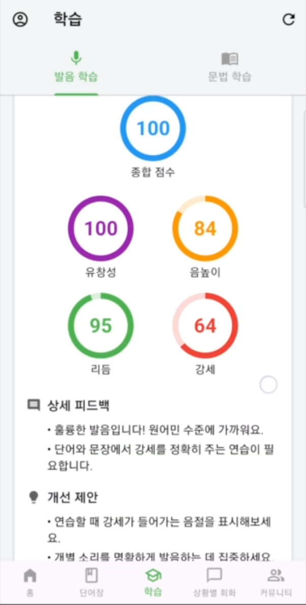
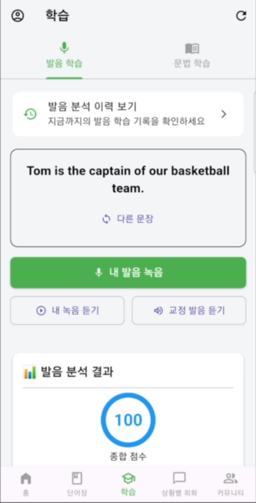
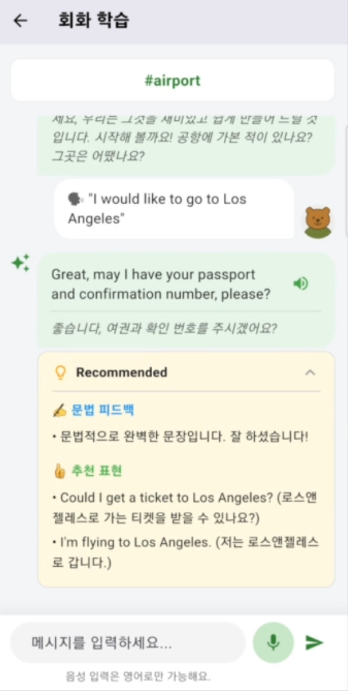

Case Study
AIVoice AIDevOps
WAWA — GPT-4 + 음성 클로닝 발음 교정 앱
2025.08.05 – 2025.11.03 (90일) · 팀 5명 (FE 1 · BE 3 · AI 1) · AI + DevOps
GPT-4와 음성 클로닝으로 사용자 목소리 그대로 발음을 교정하는 AI 학습 앱입니다.
프로젝트 개요
Problem
Duolingo 같은 기존 발음 학습 앱을 써보면, 발음이 맞았는지 틀렸는지는 알려줘도 "내 목소리가 어떻게 교정되어야 하는지"는 직접 들려주지 않습니다. 사용자는 자신의
발음이 구체적으로 어떻게 달라져야 하는지 직관적으로 이해하기 어려웠습니다.
Solution
사용자 음성을 5개 지표로 분석하고, ElevenLabs 음성 클로닝으로 '교정된 내 목소리' 가이드를 제공하며, GPT-4 기반 실시간 대화로 A1~C2 맞춤 학습을
지원하는 AI 발음 교정 앱을 개발했습니다.
핵심 성과
- ✔ GPT-4(대화)·Whisper STT(발음 검증)·pyttsx3(로컬 TTS)·ElevenLabs(Voice Cloning) — 4개의 AI 서비스를 목적에 맞게 통합
- ✔ numpy·scipy 기반 5지표 발음 분석 엔진 직접 구현 (자기상관 피치 추출·에너지 기반 강세 검출)
- ✔ AWS EC2 + GitHub Actions CI/CD로 수동 배포 과정을 자동화
시연 영상
아키텍처
- AI 서버(FastAPI, :8000)와 백엔드 서버(FastAPI, :8001)를 포트로 분리해 AWS EC2(t3.medium) 한 대에 배포
- 각 서버를 systemd 서비스(ai.service·backend.service)로 등록해 프로세스 관리 및 자동 재시작 구성
- GitHub Actions로 저장소별(AI_WAWA: main, BackEnd_WAWA: master) 독립 배포 파이프라인 구축
파란색(AI Server)이 직접 설계·배포한 영역입니다. Backend Server는 팀원 담당이며, 인프라(EC2·systemd·CI/CD) 구축은 두 서버 공통으로 담당했습니다.
AI 기능은 두 개의 독립된 흐름으로 구성
발음 학습과 회화 학습은 서로 다른 서비스 코드로 분리되어 있습니다. 회화 학습에는 발음 채점이나 ElevenLabs 연동이 없고, 발음 학습에는 GPT 대화가 들어가지 않습니다.
음성 녹음
→
Whisper STT (유사도 검증)
→
numpy·scipy 분석
→
점수 산출
→
ElevenLabs 교정 음성
발음 학습 흐름 (pronunciation_analysis_service.py)
텍스트/음성 입력
→
GPT-4 응답 생성
→
대화 진행
회화 학습 흐름 (conversation_ai_service.py)
본인 역할
핵심 기여
- ✔ OpenAI API 통합 (GPT-4 대화·Whisper STT) + pyttsx3(로컬 TTS)·ElevenLabs Voice Cloning
- ✔ Whisper 기반 발음 시도 검증(목표 문장과 일정 수준 이상의 유사도를 만족해야 분석 진행) + numpy·scipy로 직접 구현한 발음 분석 엔진 (자기상관 피치 추출, 에너지 기반 강세 검출, 구간 지속시간 기반 리듬 분석, 5지표 0-100점)
- ✔ Whisper는 발음 시도 검증(문장 인식)만 담당 — 실제 Pitch·Stress·Rhythm 채점은 라이브러리 없이 numpy·scipy 기반 DSP 알고리즘으로 직접 구현
- ✔ AWS EC2 인프라 구축 (t3.medium, systemd 기반 서비스 관리)
- ✔ GitHub Actions CI/CD 파이프라인 구축 — 수동으로 하던 배포 과정을 자동화
기술 스택
FastAPI
OpenAI GPT-4
Whisper
pyttsx3
ElevenLabs
numpy
scipy
Supabase
AWS EC2
GitHub Actions
systemd
문제 해결 과정
systemd 서비스 반복 실패 (Active: failed)
🚨 문제
AI 서버의 systemd 서비스가 배포 후 반복적으로 Active: failed 상태에 빠졌습니다.
🔍 원인
WorkingDirectory·ExecStart의 경로 설정이 실제 가상환경·엔트리포인트 위치와 어긋나 있었습니다.
🛠 해결
sudo journalctl -u ai.service -n 50 --no-pager로 로그를 확인해 원인을 좁힌 뒤, WorkingDirectory와 ExecStart
경로를 실제 배포 구조에 맞게 수정했습니다.
[Service]
WorkingDirectory=/app/ai_server/app
Environment="PATH=/app/ai_server/venv/bin:/usr/local/bin:/usr/bin:/bin"
ExecStart=/app/ai_server/venv/bin/python -m uvicorn main:app --host 0.0.0.0 --port 8000
Restart=always
RestartSec=3
✅ 결과
재부팅·배포 이후에도 AI 서버가 안정적으로 자동 기동하도록 정리했습니다.
GitHub Actions SSH 연결 실패 (Permission denied)
🚨 문제
배포 파이프라인에서 Permission denied (publickey) 오류로 EC2 SSH 연결이 계속 실패했습니다.
🔍 원인
EC2_SSH_KEY Secret에 .pem 키가 일부만 등록되어 있었습니다.
🛠 해결
.pem 파일 전체 내용을 BEGIN~END까지 포함해 복사하고, 앞뒤 공백 없이 GitHub Secrets에 다시 등록했습니다.
✅ 결과
GitHub Actions → SSH → git pull → systemctl restart 파이프라인이 안정적으로 동작해, 수동으로 하던 배포 과정을 자동화했습니다.
발음 분석의 전제 조건 — 엉뚱한 문장을 말해도 점수가 나오는 문제
🚨 문제
오디오 신호만 분석하면, 사용자가 목표 문장과 전혀 다른 말을 하거나 무음을 녹음해도 피치·강세·리듬 점수가 그대로 계산되어 나왔습니다.
🔍 원인
DSP 기반 분석(자기상관 피치 추출 등)은 소리의 물리적 특성만 볼 뿐, 사용자가 실제로 목표 문장을 발음했는지는 검증하지 않습니다.
🛠 해결
Whisper로 녹음을 텍스트로 변환한 뒤 목표 문장과의 유사도를 비교하는 검증 단계를 분석 앞에 추가했습니다. 유사도가 일정 수준(Threshold)에 못 미치면 분석
자체를 거부(Exception)하도록 pronunciation_analysis_service.py에 구현했습니다.
✅ 결과
Whisper는 문장 인식(검증 게이트) 역할만 담당하고, 실제 채점은 numpy·scipy 기반 DSP 알고리즘이 담당하는 구조로 분리되어 분석 결과의 신뢰도를
확보했습니다.
그 외 해결한 문제들
- ✔ Python 3.12 + numpy 1.24 비호환(pkgutil.ImpImporter 오류) → numpy 1.26 이상으로 업그레이드
- ✔ pyttsx3가 요구하는 espeak 라이브러리 부재 → apt로 espeak·libespeak1 설치
- ✔ .env 값 뒤에 붙인 주석이 파싱 에러(ValueError) 유발 → 값 뒤 주석 제거
- ✔ requirements.txt에 Git 충돌 마커가 남아 설치 실패 → sed로 충돌 마커 제거
화면 캡처



배운 점
서비스가 죽었을 때 무작정 재시작하기보다, journalctl로 로그를 먼저 들여다보는 습관이 문제 해결 속도를 크게 좌우한다는 걸 체감했습니다.
CI/CD를 직접 구축해보니, 자동화의 가치는 속도 자체보다 "매번 같은 방식으로 배포된다"는 반복 가능성에 있다는 걸 알게 됐습니다.
배포 자동화를 구축하면서, 애플리케이션 코드보다 운영 환경과 환경변수 관리가 서비스 안정성에 더 큰 영향을 줄 수 있다는 점을 배웠습니다.